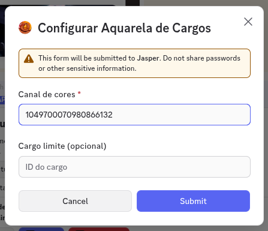
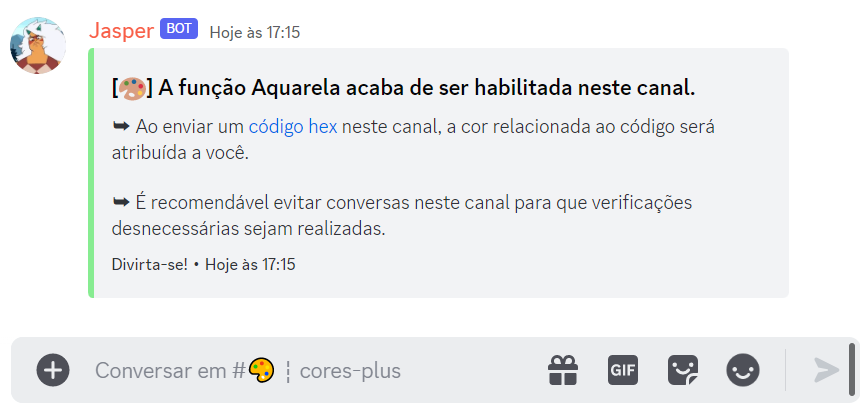
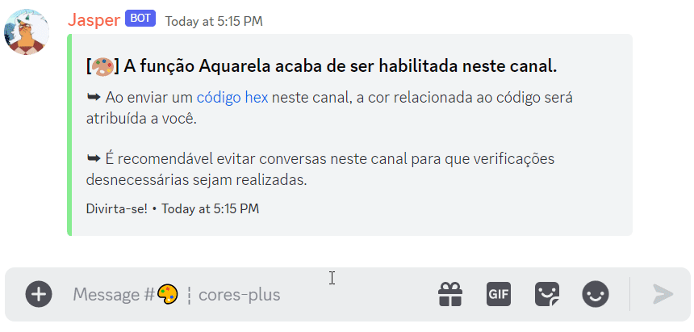
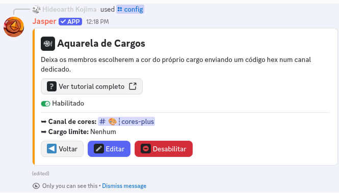

➥ Configurar essa função é coisa de gente com permissão de Administrador. E, claro, eu preciso da permissão de Gerenciar cargos para que tudo funcione sem problemas.
➥ Segue um pequeno tutorial de como configurá-la:
1. Use o comando /config. Vou abrir o Painel de Configuração do
Servidor, com uma seção para cada funcionalidade. Clique no botão Ver da seção
Aquarela de Cargos e depois em Habilitar.
2. Vou abrir um formulário com dois campos. Só o primeiro é obrigatório:
▸ Canal de cores: o ID do canal de texto que vai receber os códigos. Eu recomendo criar um canal só
pra isso, mas a decisão é sua.
▸ Cargo limite (opcional): serve de teto na hierarquia. O cargo de cor de cada membro é criado logo
abaixo do cargo que você indicar ali, o que garante que as cores não subam por cima dos cargos da
equipe. Se deixar em branco, o cargo de cor vai para a altura do cargo mais alto que a pessoa já tem.


3. Também vou mandar uma mensagem de confirmação no canal escolhido, avisando que todas as mensagens ali vão servir pra definir a cor do cargo dos membros.

4. Para utilizar a Aquarela, você deverá enviar um código hexadecimal (exemplo: #fcba03) no canal de texto.
Se o que for enviado for um código válido, um cargo específico para você será criado utilizando a cor desse código e movido na hierarquia conforme o Cargo limite que você configurou (isso se eu tiver permissão para interagir com você!).
Se você já tiver um cargo de cor e mandar outro código, a cor do cargo vai ser atualizada para o código mais recente.

5. Prontinho! Pra editar depois, volte no /config, clique em Ver e depois em Editar. Pra desligar, use o botão Desabilitar na mesma seção, que preserva o que você já configurou.

➥ Espero que você aproveite! Qualquer dúvida, sinta-se livre para perguntar no meu canal de suporte.
Publicado . Dependendo da data de publicação, o texto pode estar levemente desatualizado.